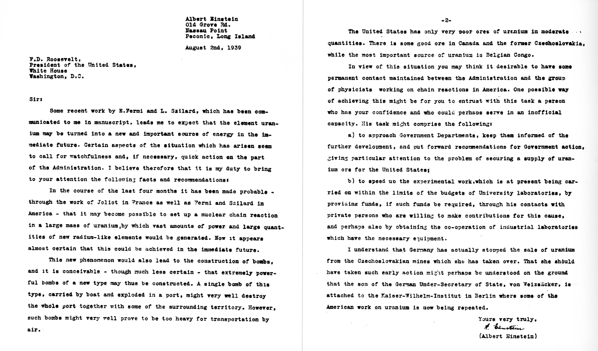
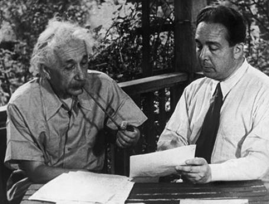
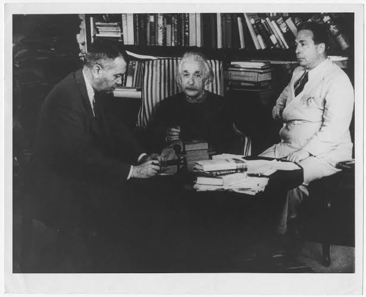

The Einstein–Szilard Letter: Nuclear Fission Warnings and Early Allied Research
Signed by Albert Einstein on August 2, 1939, and drafted in collaboration with physicist Leo Szilard, the letter to President Franklin D. Roosevelt warned that recent breakthroughs in nuclear physics could lead to extraordinarily powerful weapons and urged federal action.
Scientific Discoveries and Growing Alarm

In late 1938, German chemists Otto Hahn and Fritz Strassmann discovered nuclear fission in uranium, a breakthrough soon interpreted theoretically by physicists Lise Meitner and Otto Frisch.
Hungarian-born physicist Leo Szilard recognized immediately that a self-sustaining nuclear chain reaction in uranium might release vast amounts of energy and potentially enable the construction of an atomic bomb.
Concerned that German laboratories possessed both the scientific expertise and industrial capacity to pursue nuclear weapons, Szilard sought a way to alert senior United States officials without relying on routine bureaucratic channels.
Because Albert Einstein was one of the most respected scientists in the world and had personal connections capable of reaching the White House, Szilard met with Einstein on Long Island in July 1939 to prepare a direct appeal.
Drafting and Delivering the Letter to Roosevelt

Working with fellow Hungarian physicists Eugene Wigner and Edward Teller, Szilard drafted a concise text explaining the strategic implications of uranium chain reactions for Einstein's review and signature.
The letter noted that Germany had halted sales of uranium from occupied Czechoslovakian mines and recommended securing uranium ore supplies, particularly from the Belgian Congo, while supporting experimental research in American universities.
Because war broke out in Europe on September 1, 1939, economist and presidential adviser Alexander Sachs did not present the letter to President Roosevelt until October 11, 1939.
After discussing the letter with Sachs, Roosevelt recognized the strategic risk of leaving nuclear research solely to potential adversaries and authorized immediate coordination.
From Advisory Committee to the Manhattan Project

In response to the letter, Roosevelt established the Advisory Committee on Uranium, chaired by Lyman Briggs of the National Bureau of Standards, to evaluate the feasibility of nuclear chain reactions.
Initial federal funding was modest, supporting early experiments on graphite moderation and isotope separation at Columbia University and other research institutions during 1940 and 1941.
Subsequent British findings from the MAUD Committee and accelerating wartime urgency transformed this cautious exploratory effort into the large-scale Manhattan Project under military and scientific direction.
Although Einstein did not participate directly in the Manhattan Project's laboratory work, the August 1939 letter remains a pivotal turning point linking fundamental physics with twentieth-century statecraft.
By late 1938 and early 1939, physicists across Europe and North America were racing to understand the implications of splitting uranium atoms. The discovery that fission released additional neutrons raised the possibility of a chain reaction capable of generating enormous energy in a short time.
Leo Szilard, who had earlier conceived of the nuclear chain reaction in theory, understood both the scientific promise and the strategic peril of the finding. If a chain reaction could be sustained in a suitable mass of uranium, it might power industrial energy systems or serve as the basis for an explosive device of unprecedented destructive force.
Concerns over geopolitical developments in Europe heightened the urgency felt by refugee scientists working in the United States. Many of these researchers had left fascist regimes in Europe and feared that German scientists and state agencies might move quickly to harness nuclear fission for military purposes.
Convincing senior leaders in Washington required more than technical papers or informal conversations. Szilard wanted a clear, direct warning that would capture presidential attention without getting bogged down in routine correspondence.
Albert Einstein's international reputation as a physicist gave his signature unique weight. Although Einstein had not conducted the primary fission experiments himself, his stature ensured that a letter bearing his name would be taken seriously at the highest level of government.
During summer 1939 discussions, Szilard, Einstein, Eugene Wigner, and Edward Teller worked to frame the issue clearly for a non-specialist reader. They emphasized that a new class of extremely powerful bombs could be constructed using uranium and that rapid German advances in nuclear research were a serious concern.
Access to raw materials formed another practical pillar of the letter's argument. Uranium ore supply and control over mining sites mattered because large-scale experimental work or weapons development would require substantial quantities of refined material.
The letter also pointed out the need for stronger links between university laboratories and federal authorities. Experimentalists studying neutron capture, moderation, and isotope separation needed steady support and coordination if the United States intended to keep pace with foreign research.
When Alexander Sachs met with President Franklin D. Roosevelt in October 1939, he explained both the scientific background and the broader strategic context of a world already at war in Europe. Roosevelt listened carefully and moved to establish an official review mechanism.
The resulting Advisory Committee on Uranium brought together scientists, military officers, and civilian officials to examine chain-reaction physics and material needs. While early budgets remained modest, the committee marked the first formal step toward federal involvement in nuclear energy research.
Over the next two years, experimental findings at Columbia University, the University of Chicago, and other institutions gradually clarified technical challenges such as neutron moderation and uranium-235 enrichment. British research reports later added further momentum and detail to these assessments.
When the United States entered World War II after December 1941, the exploratory work sparked by the August 1939 letter expanded into the Manhattan Project. What began as a warning on paper grew into a vast industrial and scientific enterprise that reshaped global military strategy and postwar politics.
Physicists working on uranium fission realized that even small experimental gains could point toward larger industrial challenges. Separating fissile isotopes, purifying materials, and testing chain reactions all required sustained institutional support.
Because European governments were mobilizing for conflict in 1939, scientists worried that open publication and quiet academic work might no longer match the pace of state-backed research abroad. Direct communication with senior American leadership became a central priority.
Alexander Sachs helped bridge the gap between scientific concern and executive action by presenting the case in person to President Roosevelt. That meeting gave the advisory committee momentum as wartime pressures grew.
Over time, early laboratory studies expanded into coordinated research programs across multiple universities and government facilities, setting the stage for larger wartime mobilization.
By bringing scientific urgency directly to the Oval Office, the August 1939 letter bridged the divide between academic physics and national defense planning at a critical moment in world affairs.
Early coordination among researchers, university administrators, and federal advisers laid the organizational groundwork for the larger wartime scientific efforts that followed.
Subsequent policy reviews and laboratory experiments gradually linked theoretical nuclear physics with wartime strategic planning across Allied nations.
By drawing executive attention to uranium research and strategic supply questions, the letter helped place nuclear physics on the federal policy agenda as international tensions escalated in late 1939.
Even before large-scale wartime reactors and enrichment plants were built, the August 1939 appeal alerted senior decision-makers that atomic physics carried immediate strategic consequences.
By alerting executive leadership to uranium research and raw material questions in late 1939, the letter helped set in motion federal review and wartime nuclear coordination.
What began as a concise warning about nuclear chain reactions in August 1939 became an early milestone in the wartime mobilization of scientific research and strategic policy.
This early warning helped shape American research priorities as global conflict expanded.
Early coordination across laboratories helped guide nuclear